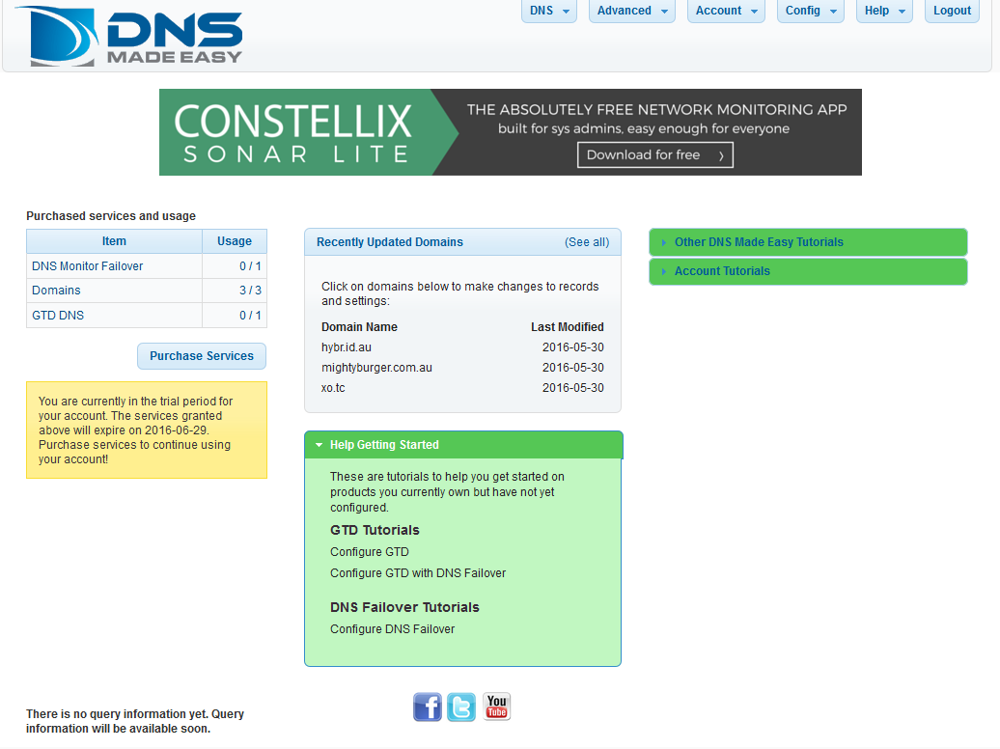
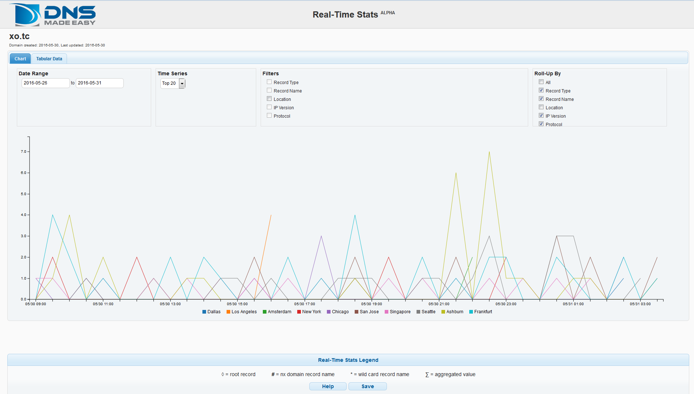

Recently on the SAGE-AU mailing list there was a question about which Linux Distro to use to run a DNS server. While Debian and Red Hat both got a lot of support several people commented that for a small domain, it's not worth the effort of running your own (public) DNS server. A lot of people recommended DNS Made Easy so I thought I'd give it a try.
I've only got a few domains and I was previously using Amazon's Route 53 so I signed up for a 30 day trial, the first thing I noticed was that there was a big banner ad at the top of the management console.

It's not a problem but it just feels a bit tacky for a paid service1. The UI isn't terribly slick but it seems intuitively laid out, fairly responsive and dose everything it needs to. And after all, the recommendations were because the service is solid, reliable and reasonably cheep not because it's got flashy lights and a slick UI.
It's going to cost me $29 per year, which is more or less what I was paying for Route 53. And it's much cheaper, easier and more reliable than running a $5 VPS with BIND9.
I feel like the real time statistics must be useful for something, but I'm not sure what. Maybe if you had a more active domain than me it would help show trends.

Unfortunately Amazon's Route 53 doesn't have an export function but you can a 3rd party tool like cli53 to export a zone file and then you can import that into DNS Made Easy. DNS Made Easy does have an export function, which is a huge plus in my opinion.
I'll see how it goes over the next few months (and update this post if I have any issues) but over all I'm pretty happy with DNS Made Easy so far.
-
I'm assuming it won't disappear when I go from the 30 day trial to the paid version. ↩